Microsoft Azure Data Fundamentals Certification
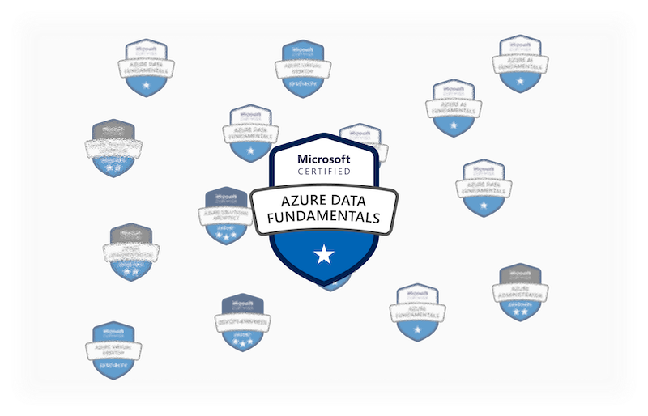
Azure Data Fundamentals (DP-900) covers the fundamentals of data concepts. The certification will provide an overview and the basics of data, database, and how you can leverage the Azure Data environment. It is suitable for people with or without technical backgrounds.
At a Glance
At a Glance
site map
Module 1 - Microsoft Azure Data Fundamentals: Explore core data concepts
|- Explore core data concepts
|- Structured data
|- Semi-structured data
|- Unstructured data
|- Data stores
|- Delimited text files
|- JavaScript Object Notation (JSON)
|- Extensible Markup Language (XML)
|- Binary Large Object (BLOB)
|- Optimized file formats
|- Explore database
|- Relational database
|- Non-relational database
|- Explore transactional database
|- Explore analytical database
|- Explore data roles and services
|- Explore data roles and services
|- Identify data services
|- Azure SQL
|- Azure Database for open-source relational database
|- Azure CosmosDB
|- Azure Storage
|- Azure Data Factory
|- Azure Synapse Analytics
|- Azure Databricks
|- Azure HDInsight
|- Azure Stream Analytics
|- Azure Data Explorer
|- Azure Purview
|- Microsoft Power BI
Module 2 - Describe fundamental principle
|- Explore fundamentals relational data concepts
|- Normalization
|- Explore SQL
|- SQL statement type
|- DDL statements
|- CDL statements
|- DML statements
|- Describe database objects
|- Explore relational database services in Azure
|- Azure SQL services and capabilities
|- Azure services for open-source database
|- Azure Database for MySQL
|- Azure Database for MySQL Flexible Server
|- Azure Database for MySQL Single Server
|- Benefits of Azure Database for MySQL
|- Azure Database for MariaDB
|- Benefits of Azure Database for MariaDB
|- Azure Database for PostgreSQL
|- Azure Database for PostgreSQL Single Server
|- Azure Database for PostgreSQL Flexible Server
|- Azure Database for PostgreSQL Hyperscale (Citus)
|- Benefits Azure Database for PostgreSQL
Module 3 - Explore non-relational data in Azure
|- Explore Azure Storage for non-relational data
|- Azure blob storage
|- Azure DataLake Storage Gen2
|- Azure Files
|- Azure Tables
|- Explore fundamentals of CosmosDB
|- When to use CosmosDB
|- Azure CosmosDB APIs
|- Core (SQL) API
|- MongoDB API
|- Table API
|- Gremlin API
Module 4 - Explore data analytics in Azure
|- Explore fundamentals of modern data warehousing
|- Describe modern data warehousing
|- Explore data ingestion pipelines
|- Explore analytical data stores
|- Services for data storage
|- Data warehouses
|- Data lakes
|- Hybrid approaches
|- Azure services for analytical stores
|- Azure Synapse Analytics
|- Azure Databricks
|- Azure HDInsight
|- Explore fundamentals of real-time analytics
|- Compare batch and stream processing
|- Differences between batch and streaming data
|- Example of combining batch and stream processing
|- Describing common elements of streaming data solutions
|- Real-time analytics in Azure
|- Sources for stream processing
|- Sinks for stream processing
|- Azure Stream Analytics
|- Spark Structured Streaming on Azure
|- Delta Lake
|- Azure Synapse Data Explorer
|- Kusto Query Language (KQL)
|- Explore fundamentals of data visualization
|- Principle of analytics data modeling
|- Tables and schema
|- Attribute hierarchies
|- Analytical modeling in Microsoft Power BI
|- Common types of data visualization and their uses
Updates on the Official Learning Materials
As of April 29, 2022, the english version of DP-900 will be updated. Some contents in this page might be outdated!
Introduction
Azure Data Fundamentals or Azure DP-900 is a Microsoft fundamental level certification with the basic knowledge about data and databases. The learning path of this certification is to gain basic knowledge of core data concepts and how the concepts can be implemented in Microsoft Azure data services. The certification exam is designed to be suitable for beginners level. To achieve the exam, candidates should be familiar with concepts of relational and non-relational data, and different types of data workloads such as transactional or analytical. Azure Data Fundamentals can be used to prepare for Azure role-based certifications like Azure Database Administrator or Azure Data Engineer Associate.
Azure Data Fundamentals will measure the Skills in the following categories:
- Describe core data concepts (15-20%)
- Describe how to work with relational data on Azure (25-30%)
- Describe how to work with non-relational data on Azure (25-30%)
- Describe an analytics workload on Azure (25-30%)
Module 1 - Explore core data concepts
Explore core data concepts
Data is a collection of facts such as numbers, descriptions, and observations used to record information.
Data structures in which this data is organized often represents in entities (a form of table such as customers, products) and attributes (columns in a table such as name, address, phone number).
Data can be classified as;
Structured data
Structured data is data that adheres to a fixed schema. Most commonly, the schema for structured data entities is tabular.
The data is represented in one or more tables that consist of rows to represent each instance of a data entity, and columns to represent attributes of the entity.

Semi-structured data
Semi-structured data is information that has some structure, but which allows for some variation between entity instances.
One common format for semi-structured data is JavaScript Object Notation (JSON).
// Customer 1
{
"firstName": "Joe",
"lastName": "Jones",
"address":
{
"streetAddress": "1 Main St.",
"city": "New York",
"state": "NY",
"postalCode": "10099"
},
"contact":
[
{
"type": "home",
"number": "555 123-1234"
},
{
"type": "email",
"address": "joe@litware.com"
}
]
}
// Customer 2
{
"firstName": "Samir",
"lastName": "Nadoy",
"address":
{
"streetAddress": "123 Elm Pl.",
"unit": "500",
"city": "Seattle",
"state": "WA",
"postalCode": "98999"
},
"contact":
[
{
"type": "email",
"address": "samir@northwind.com"
}
]
}
Unstructured data
Unstructured data are information that haven't a specific struction such as documents, images, audio and video data, and binary files.

Data stores
There are two broad categories of data store in common use:
- File stores
- Databases
The specific file format used to store data depends on a number of factors, including:
- The type of data being stored (structured, semi-structured, or unstructured).
- The applications and services that will need to read, write, and process the data.
- The need for the data files to be readable by humans, or optimized for efficient storage and processing.
Delimited text files
- Comma-Separated Values (CSV) - in which fields are separated by commas, and rows are terminated by a carriage return / new line.
- Tab-Separated Values (TSV) and space-delimited in which tabs or spaces are used to separate fields
JavaScript Object Notation (JSON)
JSON is a ubiquitous format in which a hierarchical document schema is used to define data entities (objects) that have multiple attributes.
{
"customers":
[
{
"firstName": "Joe",
"lastName": "Jones",
"contact":
[
{
"type": "home",
"number": "555 123-1234"
},
{
"type": "email",
"address": "joe@litware.com"
}
]
},
{
"firstName": "Samir",
"lastName": "Nadoy",
"contact":
[
{
"type": "email",
"address": "samir@northwind.com"
}
]
}
]
}
Extensible Markup Language (XML)
XML is a human-readable data format that was popular in the 1990s and 2000s. It's largely been superseded by the less verbose JSON format, but there are still some systems that use XML to represent data. XML uses tags enclosed in angle-brackets (<../>)
<Customers>
<Customer name="Joe" lastName="Jones">
<ContactDetails>
<Contact type="home" number="555 123-1234"/>
<Contact type="email" address="joe@litware.com"/>
</ContactDetails>
</Customer>
<Customer name="Samir" lastName="Nadoy">
<ContactDetails>
<Contact type="email" address="samir@northwind.com"/>
</ContactDetails>
</Customer>
</Customers>
Binary Large Object (BLOB)
All files are stored as binary data (1's and 0's). The bytes of binary data are mapped to printable characters (typically though a character encoding scheme such as ASCII or Unicode).
Some file formats such as unstructured data, store the data as raw binary that must be interpreted by applications and rendered.
Common types of data stored as binary include images, video, audio, and application-specific documents.
Optimized file formats
Structured and semi-structured data are typically not optimized for storage space or processing. Over time files need to be compressed and indexed, for efficient storage and processing.
- Avro is a row-based format created by Apache. Each record contains a header that describes the structure of the data in the record. This header is stored as JSON. The data is stored as binary information. Avro is a good format for compressing data and minimizing storage and network bandwidth requirements.
- ORC (Optimized Row Columnar format) organizes data into columns rather than rows developed by HortonWorks for optimizing read and write operations in Apache Hive (Hive is a data warehouse system that supports fast data summarization and querying over large datasets). An ORC file contains stripes of data. Each stripe holds the data for a column or set of columns. A stripe contains an index into the rows in the stripe, the data for each row, and a footer that holds statistical information (count, sum, max, min, and so on) for each column.
- Parquet is a columnar data format created by Cloudera and Twitter. A Parquet file contains row groups. Data for each column is stored together in the same row group. Each row group contains one or more chunks of data. A Parquet file includes metadata that describes the set of rows found in each chunk. Parquet specializes in storing and processing nested data types efficiently. It supports very efficient compression and encoding schemes.
Explore database
A database is used to define a central system in which data can be stored and queried.
Relational databases
Relational databases are commonly used to store and query structured data.
The data is stored in tables that represent entities, such as customers, products, or sales orders. Each instance of an entity is assigned a primary key that uniquely identifies it; and these keys are used to reference the entity instance in other tables.
The tables are managed and queried using Structured Query Language (SQL), which is based on an ANSII standard, so it's similar across multiple database systems.
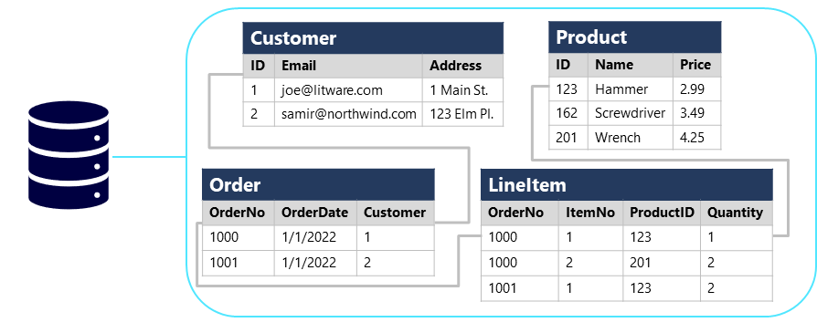
Non-relational databases
Non-relational databases are data management systems that don’t apply a relational schema to the data. Non-relational databases are often referred to as NoSQL database, even though some support a variant of the SQL language.
There are four common types of Non-relational database commonly in use;

- Key-value databases in which each record consists of a unique key and an associated value, which can be in any format.

- Document databases, which are a specific form of key-value database in which the value is a JSON document (which the system is optimized to parse and query)

- Column family databases, which store tabular data comprising rows and columns, but you can divide the columns into groups known as column-families. Each column family holds a set of columns that are logically related together.

- Graph databases, which store entities as nodes with links to define relationships between them.
Explore transactional data processing
A transactional system records transactions that encapsulate specific events that the organization wants to track.
A transaction could be financial, such as the movement of money between accounts in a banking system.
Transactional systems are often high-volume, sometimes handling many millions of transactions in a single day. The data being processed has to be accessible very quickly. The work performed by transactional systems is often referred to as Online Transactional Processing (OLTP).
OLTP solutions rely on a database system in which data storage is optimized for both read and write operations in order to support transactional workloads in which data records are created, retrieved, updated, and deleted (often referred to as CRUD operations). These operations are applied transactionally, in a way that ensures the integrity of the data stored in the database. To accomplish this, OLTP systems enforce transactions that support so-called ACID semantics:
- Atomicity – each transaction is treated as a single unit, which succeeds completely or fails completely. For example, a transaction that involved debiting funds from one account and crediting the same amount to another account must complete both actions. If either action can't be completed, then the other action must fail.
- Consistency – transactions can only take the data in the database from one valid state to another. To continue the debit and credit example above, the completed state of the transaction must reflect the transfer of funds from one account to the other.
- Isolation – concurrent transactions cannot interfere with one another, and must result in a consistent database state. For example, while the transaction to transfer funds from one account to another is in-process, another transaction that checks the balance of these accounts must return consistent results - the balance-checking transaction can't retrieve a value for one account that reflects the balance before the transfer, and a value for the other account that reflects the balance after the transfer.
- Durability – when a transaction has been committed, it will remain committed. After the account transfer transaction has completed, the revised account balances are persisted so that even if the database system were to be switched off, the committed transaction would be reflected when it is switched on again.
OLTP systems are typically used to support live applications that process business data - often referred to as line of business (LOB) applications.
Explore analytical data processing
An analytical processing system can look like this:

- Data files may be stored in a central data lake for analysis.
- An extract, transform, and load (ETL) process copies data from files and OLTP databases into a data warehouse that is optimized for read activity. Commonly, a data warehouse schema is based on fact tables that contain numeric values you want to analyze.
- Data in the data warehouse may be aggregated and loaded into an online analytical processing (OLAP) model, or cube (known as an analytical model). Aggregated numeric values (measures) from fact tables are calculated for intersections of dimensions from dimension tables.
-
The data in the data lake, data warehouse, and analytical model can be queried to produce reports, visualizations, and dashboards.
-
Data lakes are common in modern data analytical processing scenarios, where a large volume of file-based data must be collected and analyzed.
- Data warehouses are an established way to store data in a relational schema that is optimized for read operations – primarily queries to support reporting and data visualization.
- An OLAP model is an aggregated type of data storage that is optimized for analytical workloads. Data aggregations are across dimensions at different levels, enabling you to drill up/down to view aggregations at multiple hierarchical levels.
Different types of user might perform data analytical work at different stages of the overall architecture. For example:
- Data scientists might work directly with data files in a data lake to explore and model data.
- Data Analysts might query tables directly in the data warehouse to produce complex reports and visualizations.
- Business users might consume pre-aggregated data in an analytical model in the form of reports or dashboards.
Explore data roles and services
Explore data roles and services
The three key job roles that deal with data in most organizations are:
- Database administrators - manage databases, assigning permissions to users, storing backup copies of data and restore data in the event of a failure. A database administrator is responsible for the design, implementation, maintenance, and operational aspects of on-premises and cloud-based database systems.
- Data engineers - manage infrastructure and processes for data integration across the organization, applying data cleaning routines, identifying data governance rules, and implementing pipelines to transfer and transform data between systems. A data engineer collaborates with stakeholders to design and implement data-related workloads, including data ingestion pipelines, cleansing and transformation activities, and data stores for analytical workloads.
- Data analysts - explore and analyze data to create visualizations and charts that enable organizations to make informed decisions. A data analyst enables businesses to maximize the value of their data assets.
Identify data services
Azure SQL
Azure SQL is the collective name for a family of relational database solutions based on the Microsoft SQL Server database engine. Specific Azure SQL services include:
- Azure SQL Database – a fully managed platform-as-a-service (PaaS) database hosted in Azure
- Azure SQL Managed Instance – a hosted instance of SQL Server with automated maintenance, which allows more flexible configuration than Azure SQL DB but with more administrative responsibility for the owner.
- Azure SQL VM – a virtual machine with an installation of SQL Server, allowing maximum configurability with full management responsibility.
Azure Database for open-source relational databases
Azure includes managed services for popular open-source relational database systems
- Azure Database for MySQL - a simple-to-use open-source database management system that is commonly used in Linux, Apache, MySQL, and PHP (LAMP) stack apps.
- Azure Database for MariaDB - a newer database management system, created by the original developers of MySQL. The database engine has since been rewritten and optimized to improve performance. MariaDB offers compatibility with Oracle Database (another popular commercial database management system).
- Azure Database for PostgreSQL - a hybrid relational-object database. You can store data in relational tables, but a PostgreSQL database also enables you to store custom data types, with their own non-relational properties.
Azure Cosmos DB
Is a global-scale non-relational (NoSQL) database system that supports multiple application programming interfaces (APIs), enabling you to store and manage data as JSON documents, key-value pairs, column-families, and graphs.
Azure Storage
Azure Storage is a core Azure service that enables you to store data in:
- Blob containers - scalable, cost-effective storage for binary files.
- File shares - network file shares such as you typically find in corporate networks.
- Tables - key-value storage for applications that need to read and write data values quickly.
Azure Data Factory
Ss an Azure service that enables you to define and schedule data pipelines to transfer and transform data. Azure Data Factory is used to build extract, transform, and load (ETL) solutions that populate analytical data stores with data from transactional systems across the organization.
Azure Synapse Analytics
Ss a comprehensive, unified data analytics solution that provides a single service interface for multiple analytical capabilities, include Pipelines, SQL, Apache Spark, Azure Synapse Data Explorer.
Azure Databricks
is an Azure-integrated version of the popular Databricks platform, combines the Apache Spark data processing platform with SQL database semantics and an integrated management interface to enable large-scale data analytics.
Azure HDInsight
Is a service that provides Azure-hosted clusters for popular Apache open-source big data processing technologies, such as Apache Spark, Apache Hadoop, Apache HBase, Apache Kafka, Apache Storm.
Azure Stream Analytics
Is a real-time stream processing engine that captures a stream of data from an input, applies a query to extract and manipulate data from the input stream, and writes the results to an output for analysis or further processing.
Azure Data Explorer
Is a standalone service that offers the same high-performance querying of log and telemetry data as the Azure Synapse Data Explorer runtime in Azure Synapse Analytics.
Data analysts can use Azure Data Explorer to query and analyze data that includes a timestamp attribute, such as is typically found in log files and Internet-of-things (IoT) telemetry data.
Azure Purview
Provides a solution for enterprise-wide data governance and discoverability. Azure Purview to enforce data governance across the enterprise and ensure the integrity of data used to support analytical workloads.
Microsoft Power BI
Is a platform for analytical data modeling and reporting that data analysts can use to create and share interactive data visualizations.
Module 2 - Explore relational data in Azure
Explore fundamental relational data concepts
The relational model provides a standard way of representing and querying data that can be used by any application. One of the key advantages of the relational database model is its use of tables, which are an intuitive, efficient, and flexible way to store and access structured information.
Relational databases are used to track inventories, process ecommerce transactions, manage huge amounts of mission-critical customer information, and much more.
A relational database is useful for storing any information containing related data elements that must be organized in a rules-based, consistent structure.
Normalization
As a term used for a schema design process that minimizes data duplication and enforces data integrity, a simple definition for practical purposes is:
- Separate each entity into its own table.
- Separate each discrete attribute into its own column.
- Uniquely identify each entity instance (row) using a primary key.
- Use foreign key columns to link related entities.
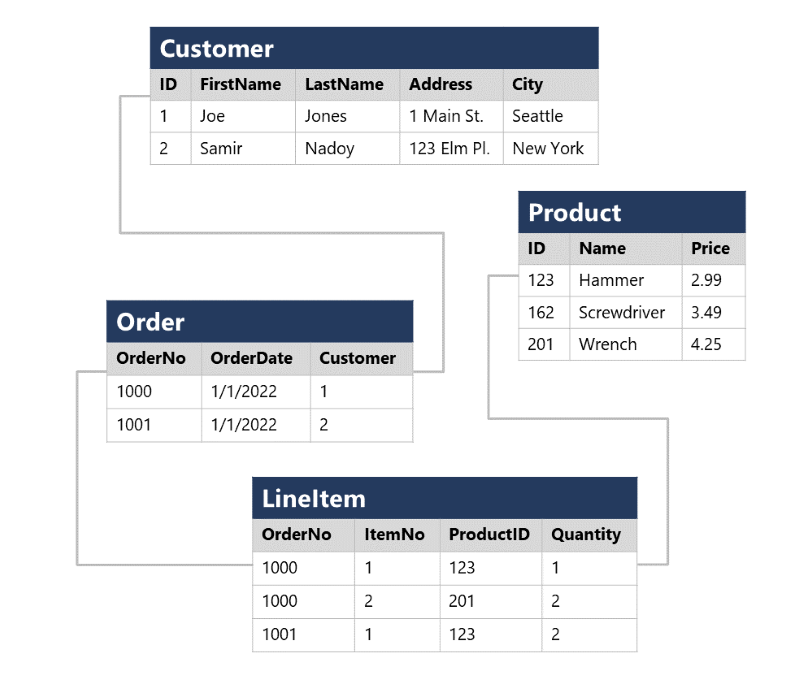
Instances of each entity are uniquely identified by an ID or other key value, known as a primary key; and when one entity references another (for example, an order has an associated customer), the primary key of the related entity is stored as a foreign key.
Explore SQL
SQL stands for Structured Query Language, and is used to communicate with a relational database. Some common relational database management systems that use SQL include Microsoft SQL Server, MySQL, PostgreSQL, MariaDB, and Oracle.
You can use SQL statements such as SELECT, INSERT, UPDATE, DELETE, CREATE, and DROP to accomplish almost everything that you need to do with a database.
SQL statement types
SQL statements are grouped into three main logical groups:
- Data Definition Language (DDL)
- Data Control Language (DCL)
- Data Manipulation Language (DML)
DDL statements
| Statement | Description |
|---|---|
| CREATE | Create a new object in the database, such as a table or a view |
| ALTER | Modify the structure of an object. For instance, altering a table to add a new column |
| DROP | Remove an object from the database |
| RENAME | Rename an existing object |
CDL statements
| Statement | Description |
|---|---|
| GRANT | Grant permission to perform specific actions |
| DENY | Deny permission to perform specific actions |
| REVOKE | Remove a previously granted permission |
DML statements
| Statement | Description |
|---|---|
| SELECT | Read rows from a table |
| INSERT | Insert new rows into a table |
| UPDATE | Modify data in existing rows |
| DELETE | Delete existing rows |
Describe database objects
- View - view is a virtual table based on the results of a SELECT query.
- Stored procedure - used to encapsulate programmatic logic in a database for actions that applications need to perform when working with data.
- Index - helps to search for data in a table.
Explore relational database services in Azure
Azure SQL services and capabilities
| SQL Server on Azure VMs | Azure SQL Managed Instance | Azure SQL Database | |
|---|---|---|---|
 |
 |
 |
|
| Type | IaaS | PaaS | PaaS |
| SQL Server compatibility | Fully compatible with on-premises physical and virtualized installations. Applications and databases can easily be "lift and shift" migrated without change. | Near-100% compatibility with SQL Server. Most on-premises databases can be migrated with minimal code changes by using the Azure Database Migration service | Supports most core database-level capabilities of SQL Server. Some features depended on by an on-premises application may not be available |
| Architecture | SQL Server instances are installed in a virtual machine. Each instance can support multiple databases. | Each managed instance can support multiple databases. Additionally, instance pools can be used to share resources efficiently across smaller instances. | You can provision a single database in a dedicated, managed (logical) server; or you can use an elastic pool to share resources across multiple databases and take advantage of on-demand scalability |
| Availability | 99.99% | 99.99% | 99.995% |
| Management | You must manage all aspects of the server, including operating system and SQL Server updates, configuration, backups, and other maintenance tasks. | Fully automated updates, backups, and recovery. | Fully automated updates, backups, and recovery |
| Use cases | Use this option when you need to migrate or extend an on-premises SQL Server solution and retain full control over all aspects of server and database configuration. | Use this option for most cloud migration scenarios, particularly when you need minimal changes to existing applications. | Use this option for new cloud solutions, or to migrate applications that have minimal instance-level dependencies |
Azure services for open-source databases
Azure Database for MySQL
Azure Database for MySQL is a PaaS implementation of MySQL in the Azure cloud, based on the MySQL Community Edition.
The Azure Database for MySQL service includes high availability at no additional cost, and scalability as required. You only pay for what you use. Automatic backups are provided, with point-in-time restore.
Azure Database for MySQL Flexible Server
Flexible Server provides more granular control and flexibility over database management functions and configuration settings.
Flexible server is the recommended deployment option for all new developments or migrations.
Azure Database for MySQL Single Server
Single servers are best for existing applications already using single server.
Benefits of Azure Database for MySQL
- High availability features built-in.
- Predictable performance.
- Easy scaling that responds quickly to demand.
- Secure data, both at rest and in motion.
- Automatic backups and point-in-time restore for the last 35 days.
- Enterprise-level security and compliance with legislation.
- The system uses pay-as-you-go pricing so you only pay for what you use.
Azure Database for MariaDB
Azure Database for MariaDB is an implementation of the MariaDB database management system adapted to run in Azure. It's based on the MariaDB Community Edition.
Benefits of Azure Database for MariaDB
- Built-in high availability with no additional cost.
- Predictable performance
- pay-as-you-go pricing.
- Scaling as needed within seconds.
- Secured protection of sensitive data at rest and in motion.
- Automatic backups and point-in-time-restore for up to 35 days.
- Enterprise-grade security and compliance.
Azure Database for PostgreSQL
Azure Database for PostgreSQL Single Server
Provides similar benefits as Azure Database for MySQL. You choose from three pricing tiers: Basic, General Purpose, and Memory Optimized.
Azure Database for PostgreSQL Flexible Server
It provides more control and server configuration customizations, and has better cost optimization controls.
Azure Database for PostgreSQL Hyperscale (Citus)
Hyperscale (Citus) is a deployment option that scales queries across multiple server nodes to support large database loads.
Benefits of Azure Database for PostgreSQL
- highly available service
- pgAdmin tool, which you can use to manage and monitor a PostgreSQL database
Module 3 - Explore non-relational data in Azure
Data that hasn't a rigid structure
Explore Azure Storage for non-relational data
Azure blob storage
Azure Blob Storage is a service that enables you to store massive amounts of unstructured data as binary large objects, or blobs, in the cloud.

In an Azure storage account, you store blobs in containers. A container provides a convenient way of grouping related blobs together. You control who can read and write blobs inside a container at the container level.
Azure Blob Storage supports three different types of blob:
- Block blobs - A block blob is handled as a set of blocks. Each block can vary in size, up to 100 MB. A block blob can contain up to 50,000 blocks, giving a maximum size of over 4.7 TB. The block is the smallest amount of data that can be read or written as an individual unit. Block blobs are best used to store discrete, large, binary objects that change infrequently.
- Page blobs - A page blob is organized as a collection of fixed size 512-byte pages. A page blob is optimized to support random read and write operations; you can fetch and store data for a single page if necessary. A page blob can hold up to 8 TB of data. Azure uses page blobs to implement virtual disk storage for virtual machines.
- Append blobs - An append blob is a block blob optimized to support append operations. You can only add blocks to the end of an append blob; updating or deleting existing blocks isn't supported. Each block can vary in size, up to 4 MB. The maximum size of an append blob is just over 195 GB.
Blob storage provides three access tiers, which help to balance access latency and storage cost:
- The Hot tier is the default. You use this tier for blobs that are accessed frequently. The blob data is stored on high-performance media.
- The Cool tier has lower performance and incurs reduced storage charges compared to the Hot tier. Use the Cool tier for data that is accessed infrequently. You can migrate a blob from the Cool tier back to the Hot tier.
- The Archive tier provides the lowest storage cost, but with increased latency. The Archive tier is intended for historical data that mustn't be lost, but is required only rarely. Blobs in the Archive tier are effectively stored in an offline state. Typical reading latency for the Hot and Cool tiers is a few milliseconds, but for the Archive tier, it can take hours for the data to become available. To retrieve a blob from the Archive tier, you must change the access tier to Hot or Cool. The blob will then be rehydrated. You can read the blob only when the rehydration process is complete.
You can create lifecycle management policies for blobs in a storage account. A lifecycle management policy can automatically move a blob from Hot to Cool, and then to the Archive tier.
Azure DataLake Storage Gen2
service for hierarchical data storage for analytical data lakes, often used by so-called big data analytical solutions that work with structured, semi-structured, and unstructured data stored in files.
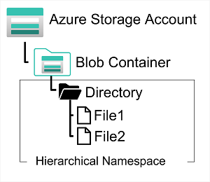
Systems like Hadoop in Azure HDInsight, Azure Databricks, and Azure Synapse Analytics can mount a distributed file system hosted in Azure Data Lake Store Gen2 and use it to process huge volumes of data.
To create an Azure Data Lake Store Gen2 files system, you must enable the Hierarchical Namespace option of an Azure Storage account (it is a one-way process and is irreversible).
Azure Files
Azure Files is a way to create cloud-based network shares, such as you typically find in on-premises organizations to make documents and other files available to multiple users

You create Azure File storage in a storage account. Azure Files enables you to share up to 100 TB of data in a single storage account. The maximum size of a single file is 1 TB. Supports up to 2000 concurrent connections per shared file.
Azure File Storage offers two performance tiers;
- The Standard tier uses hard disk-based hardware in a datacenter
- The Premium tier uses solid-state disks. The Premium tier offers greater throughput, but is charged at a higher rate.
Azure Files supports two common network file sharing protocols:
- Server Message Block (SMB) file sharing is commonly used across multiple operating systems (Windows, Linux, macOS).
- Network File System (NFS) shares are used by some Linux and macOS versions. To create an NFS share, you must use a premium tier storage account and create and configure a virtual network through which access to the share can be controlled.
Azure Tables
Azure Table Storage is a NoSQL storage solution that makes use of tables containing key/value data items.

An Azure Table enables to store semi-structured data. All rows in a table must have a unique key (composed of a partition key and a row key), a timestamp column records the date and time the modification was made, the columns in each row can vary.
Azure Table Storage splits a table into partitions, a mechanism for grouping related rows, based on a common property or partition key. Rows that share the same partition key will be stored together. Items in the same partition are stored in row key order
- Partitions are independent from each other, and can grow or shrink as rows are added to, or removed from, a partition. A table can contain any number of partitions.
- When you search for data, you can include the partition key in the search criteria. This helps to narrow down the volume of data to be examined, and improves performance by reducing the amount of I/O (input and output operations, or reads and writes) needed to locate the data.
Explore fundamentals of Azure Cosmos DB
Azure Cosmos DB is a highly scalable cloud database service for NoSQL data which supports multiple application programming interfaces (APIs).
You can enable multi-region writes, adding the Azure regions of your choice to your Cosmos DB account so that globally distributed users can each work with data in their local replica.
When to use Cosmos DB
- IoT and telematics
- Retail and marketing
- Gaming
- Web and mobile applications
Azure Cosmos DB APIs
Core (SQL) API
native API in Cosmos DB manages data in JSON document format
Query in SQL
Result
{
"id": "joe@litware.com",
"name": "Joe Jones",
"address": {
"street": "1 Main St.",
"city": "Seattle"
}
}
MongoDB API
data is stored in Binary JSON (BSON) format
Query
Result
Table API
work with data in key-value tables, similar to Azure Table Storage
For example, you might define a table named Customers like this:
| PartitionKey | RowKey | Name | |
|---|---|---|---|
| 1 | 123 | Joe Jones | joe@litware.com |
| 1 | 124 | Samir Nadoy | samir@northwind.com |
Request returns
Result
Cassandra API
The Cassandra API is compatible with Apache Cassandra, which is a popular open source database that uses a column-family storage structure.
For example, an Employees table
| ID | Name | Manager |
|---|---|---|
| 1 | Sue Smith | |
| 2 | Ben Chan | Sue Smith |
retrieve the record for Ben Chan
Gremlin API
data in a graph structure; in which entities are defined as vertices that form nodes in connected graph. Nodes are connected by edges that represent relationships, like this:
Gremlin syntax includes functions to operate on vertices and edges, enabling you to insert, update, delete, and query data in the graph.
For example, you could use the following code to add a new employee
Add new employee
g.addV('employee').property('id', '3').property('firstName', 'Alice')
g.V('3').addE('reports to').to(g.V('1'))
returns all of the employee vertices
Module 4 - Explore data analytics in Azure
Explore fundamentals of modern data warehousing
Describe modern data warehousing

- Data ingestion and processing – data from one or more sources is loaded into a data lake or a relational data warehouse. The load operation usually involves an extract, transform, and load (ETL) or extract, load, and transform (ELT) process in which the data is cleaned, filtered, and restructured for analysis.
- Analytical data store – data stores for large scale analytics include relational data warehouses, file-system based data lakes, and hybrid architectures that combine features of data warehouses and data lakes (sometimes called data lakehouses or lake databases)
- Analytical data model – are data models that pre-aggregate the data to make it easier to produce reports, dashboards, and interactive visualizations. Often these data models are described as cubes, in which numeric data values are aggregated across one or more dimensions. The model encapsulates the relationships between data values and dimensional entities to support "drill-up/drill-down" analysis.
- Data visualization – data analysts consume data from analytical models, and directly from analytical stores to create reports, dashboards, and other visualizations. The visualizations from the data show trends, comparisons, and key performance indicators (KPIs) for a business or other organization.
Explore data ingestion pipelines

A pipeline is an orchestration of ETL processes. A pipeline can be created and run by using Azure Data Factory, or Azure Synapse Analytics to manage all of the components of your data warehousing solution in a unified workspace.
For example, you might use an Azure Blob Store linked service to ingest the input dataset, and then use services such as Azure SQL Database to run a stored procedure that looks up related data values, before running a data processing task on Azure Databricks or Azure HDInsight, or apply custom logic using an Azure Function. Finally, you can save the output dataset in a linked service such as Azure Synapse Analytics.
Explore analytical data stores
Services for data storage
Data warehouses
A data warehouse is a relational database in which the data is stored in a schema that is optimized for data analytics rather than transactional workloads. Numeric values are stored in central fact tables, which are related to one or more dimension tables that represent entities by which the data can be aggregated.
Data lakes
A data lake is a file store, usually on a distributed file system for high performance data access. Technologies like Spark or Hadoop are often used to process queries on the stored files and return data for reporting and analytics. These systems often apply a schema-on-read approach to define tabular schemas on semi-structured data files at the point where the data is read for analysis, without applying constraints when it's stored. Data lakes are great for supporting a mix of structured, semi-structured, and even unstructured data that you want to analyze without the need for schema enforcement when the data is written to the store.
Hybrid approaches
You can use a hybrid approach that combines features of data lakes and data warehouses in a lake database or data lakehouse. The raw data is stored as files in a data lake, and a relational storage layer abstracts the underlying files and expose them as tables, which can be queried using SQL.
Azure services for analytical stores
Azure Synapse Analytics
is a unified, end-to-end solution for large scale data analytics. It brings together multiple technologies and capabilities, enabling you to combine the data integrity and reliability of a scalable, high-performance SQL Server based relational data warehouse with the flexibility of a data lake and open-source Apache Spark.
All Azure Synapse Analytics services can be managed through a single, interactive user interface called Azure Synapse Studio
Azure Databricks
s an implementation of the popular Databricks platform. Databricks is a comprehensive data analytics solution built on Apache Spark, and offers native SQL capabilities as well as workload-optimized Spark clusters for data analytics and data science.
Azure HDInsight
is an Azure service that supports multiple open-source data analytics cluster types. It is a suitable option if your analytics solution relies on multiple open-source frameworks or if you need to migrate an existing on-premises Hadoop-based solution to the cloud.
Explore fundamentals of real-time analytics
Compare batch and stream processing
Data processing is simply the conversion of raw data to meaningful information* through a process. There are two general ways to process data:
-
Batch processing - in which multiple data records are collected and stored before being processed together in a single operation.
-
Advantages of batch processing include:
-
Large volumes of data can be processed at a convenient time.
-
It can be scheduled to run at a time when computers or systems might otherwise be idle, such as overnight, or during off-peak hours.
-
Disadvantages of batch processing include:
-
The time delay between ingesting the data and getting the results.
- All of a batch job's input data must be ready before a batch can be processed.
-
-
Stream processing - in which a source of data is constantly monitored and processed in real time as new data events occur.
Differences between batch and streaming data
- Data scope - (availability of the data) Batch processing can process all the data in the dataset. Stream processing typically only has access to the most recent data received.
- Data size - Batch processing is suitable for handling large datasets efficiently. Stream processing is intended for individual records or micro batches consisting of few records.
- Performance - Latency is the time taken for the data to be received and processed. The latency for batch processing is typically a few hours. Stream processing typically occurs immediately, with latency in the order of seconds or milliseconds.
- Analysis - You typically use batch processing to perform complex analytics. Stream processing is used for simple response functions, aggregates, or calculations such as rolling averages.
Example of combining batch and stream processing

- Data events from a streaming data source are captured in real-time.
- Data from other sources is ingested into a data store (often a data lake) for batch processing.
- If real-time analytics is not required, the captured streaming data is written to the data store for subsequent batch processing.
- When real-time analytics is required, a stream processing technology is used to prepare the streaming data for real-time analysis or visualization; often by filtering or aggregating the data over temporal windows.
- The non-streaming data is periodically batch processed to prepare it for analysis, and the results are persisted in an analytical data store (often referred to as a data warehouse) for historical analysis.
- The results of stream processing may also be persisted in the analytical data store to support historical analysis.
- Analytical and visualization tools are used to present and explore the real-time and historical data.
Describe common elements of streaming data solutions

- An event generates some data. This might be a signal being emitted by a sensor, a social media message being posted, a log file entry being written, or any other occurrence that results in some digital data.
- The generated data is captured in a streaming source for processing. In simple cases, the source may be a folder in a cloud data store or a table in a database. In more robust streaming solutions, the source may be a "queue" that encapsulates logic to ensure that event data is processed in order and that each event is processed only once.
- The event data is processed, often by a perpetual query that operates on the event data to select data for specific types of events, project data values, or aggregate data values over temporal (time-based) periods (or windows) - for example, by counting the number of sensor emissions per minute.
- The results of the stream processing operation are written to an output (or sink), which may be a file, a database table, a real-time visual dashboard, or another queue for further processing by a subsequent downstream query.
Real-time analytics in Azure
- Azure Stream Analytics: A platform-as-a-service (PaaS) solution to define streaming jobs that ingest data (input) from a streaming source, apply a perpetual query, and write the results to an output.
- Spark Structured Streaming: An open-source library that enables you to develop complex streaming solutions on Apache Spark based services, including Azure Synapse Analytics, Azure Databricks, and Azure HDInsight.
- Azure Data Explorer: A high-performance database and analytics service that is optimized for ingesting and querying batch or streaming data with a time-series element, and which can be used as a standalone Azure service or as an Azure Synapse Data Explorer runtime in an Azure Synapse Analytics workspace.
Sources for stream processing
services used to ingest data for stream processing
- Azure Event Hubs: A data ingestion service that you can use to manage queues of event data, ensuring that each event is processed in order, exactly once.
- Azure IoT Hub: A data ingestion service that is similar to Azure Event Hubs, but which is optimized for managing event data from Internet-of-things (IoT) devices.
- Azure Data Lake Store Gen 2: A highly scalable storage service that is often used in batch processing scenarios, but which can also be used as a source of streaming data.
- Apache Kafka: An open-source data ingestion solution that is commonly used together with Apache Spark. You can use Azure HDInsight to create a Kafka cluster.
Sinks for stream processing
output from stream processing
- Azure Event Hubs: Used to queue the processed data for further downstream processing.
- Azure Data Lake Store Gen 2 or Azure blob storage: Used to persist the processed results as a file.
- Azure SQL Database or Azure Synapse Analytics, or Azure Databricks: Used to persist the processed results in a database table for querying and analysis.
- Microsoft Power BI: Used to generate real time data visualizations in reports and dashboards.
Azure Stream Analytics
Azure Stream Analytics - is a service for complex event processing and analysis of streaming data. Stream Analytics is used to:
- Ingest data from an input, such as an Azure event hub, Azure IoT Hub, or Azure Storage blob container.
- Process the data by using a query to select, project, and aggregate data values.
- Write the results to an output, such as Azure Data Lake Gen 2, Azure SQL Database, Azure Synapse Analytics, Azure Functions, Azure event hub, Microsoft Power BI, or others.
Azure Stream Analytics can be used by creating a Stream Analytics job in an Azure subscription, configure its input(s) and output(s), and define the query that the job will use to process the data.
Spark Structured Streaming on Azure
Apache Spark - is a distributed processing framework for large scale data analytics. You can use Spark on Microsoft Azure in the following services:
- Azure Synapse Analytics
- Azure Databricks
- Azure HDInsight
Spark can be used to run code (usually written in Python, Scala, or Java) in parallel. Spark can be used for both batch processing and stream processing.
Spark Structured Streaming is a great choice for real-time analytics when you need to incorporate streaming data into a Spark based data lake or analytical data store.
Delta Lake
Delta Lake is an open-source storage layer that adds support for transactional consistency, schema enforcement, and other common data warehousing features to data lake storage.
Delta Lake combined with Spark Structured Streaming is a good solution when you need to abstract batch and stream processed data in a data lake behind a relational schema for SQL-based querying and analysis.
Azure Synapse Data Explorer
Azure Data Explorer - is a standalone Azure service for efficiently analyzing data. You can use the service as the output for analyzing large volumes of diverse data from data sources such as websites, applications, IoT devices, and more
Azure Data Explorer is a great choice of technology when you need to:
- Capture and analyze real-time or batch data that includes a time-series element; such as log telemetry or values emitted by Internet-of-things (IoT) devices.
- Explore, filter, and aggregate data quickly by using the intuitive and powerful Kusto Query Language (KQL).
Kusto Query Language (KQL)
a language that is specifically optimized for fast read performance – particularly with telemetry data that includes a timestamp attribute.
Explore fundamentals of data visualization
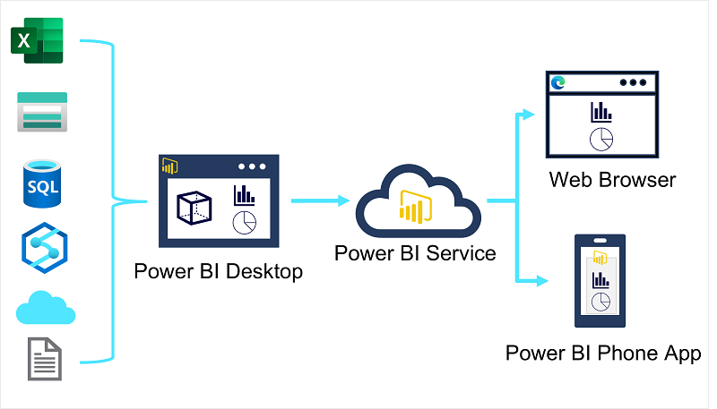
Microsoft Power BI is a suite of tools and services that data analysts can use to build interactive data visualizations for business users to consume.
Analytical models enable you to structure data to support analysis. Models are based on related tables of data and define the numeric values that you want to analyze or report (known as measures) and the entities by which you want to aggregate them (known as dimensions).
Principles of analytical data modeling
Tables and schema

Dimension tables represent the entities by which you want to aggregate numeric measures
Attribute hierarchies

Attribute hierarchies that enable you to quickly drill-up or drill-down to find aggregated values at different levels in a hierarchical dimension.
Analytical modeling in Microsoft Power BI

You can use Power BI to define an analytical model from tables of data, which can be imported from one or more data source.
Common types of data visualization and their uses
| Type | Image | Usage |
|---|---|---|
| Tables and text | 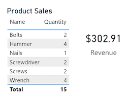 | simplest way to communicate data, numerous related values must be displayed, etc. |
| Bar and column charts | 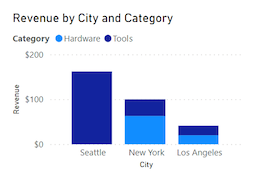 | compare numeric values for discrete categories |
| Line charts | 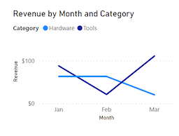 | compare categorized values and are useful when you need to examine trends |
| Pie charts | 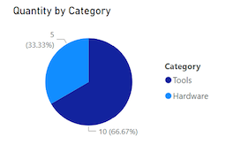 | compare categorized values as proportions of a total |
| Scatter plots | 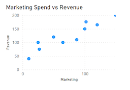 | compare two numeric measures and identify a relationship or correlation |
| Maps | 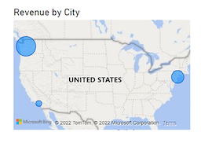 | compare values for different geographic areas or locations |
| Interactive reports in Power BI | 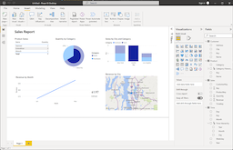 | link data to one another and provide interactivity |